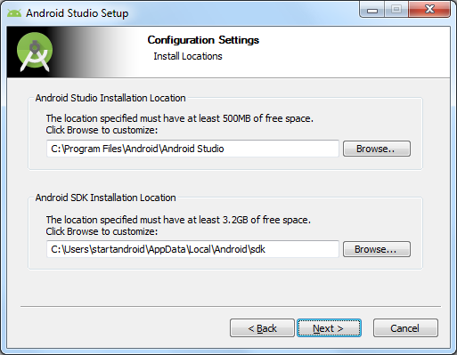
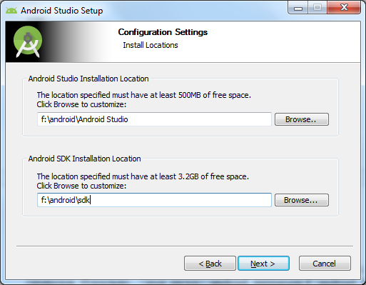
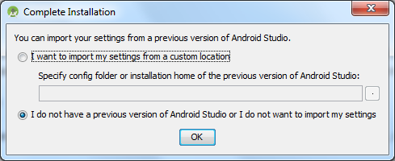
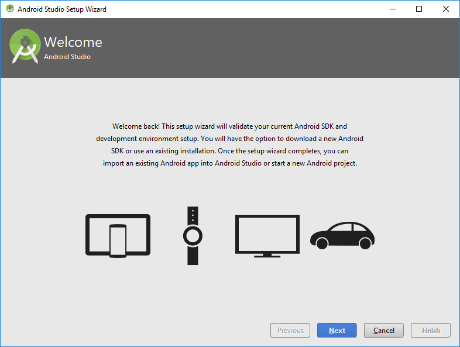
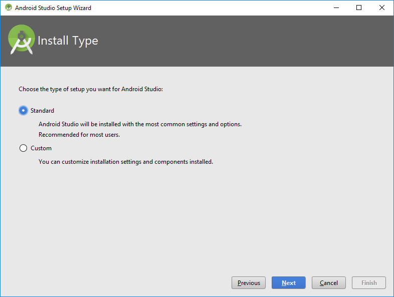
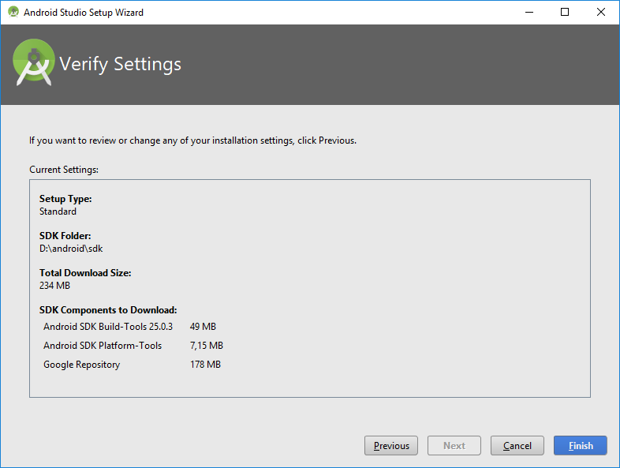
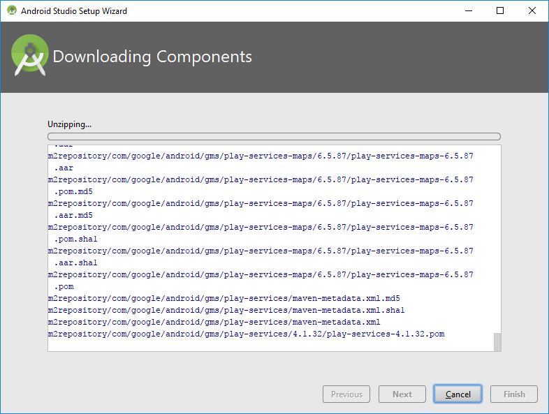
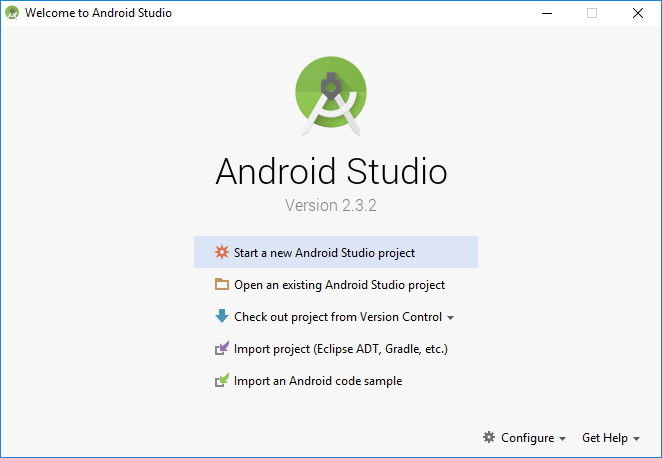

Для того, чтобы писать программы - нужна среда разработки. В этом уроке мы подробно рассмотрим, как установить и настроить эту среду разработки.
В этой статье много скриншотов и инструкций. Учитывайте, что версии ПО постоянно меняются и у вас все может выглядеть по-другому и версии могут быть другими.
1. Java SDK (JDK)
Т.к. разработка приложений ведется на Java, нам нужно скачать и установить соответствующее SDK, называемое еще JDK (если, конечно, оно уже не установлено).
Скачать можно здесь. Нажимайте там ближайшую кнопку JDK Download, выбирайте версию под вашу операционную систему, скачивайте и устанавливайте. Если ссылка не работает, то просто поищите в Интернкте "java sdk download".
После установки рекомендую перезагрузить комп.
2. Среда разработки + Android SDK
В среде разработки мы будем создавать программу и получать на выходе готовое приложение. Сейчас существует несколько сред разработки, мы выберем рекомендуемую Google Android Studio.
Скачиваем самую последнюю версию Android Studio.
Итак, скачали exe-файл. Запускаем его. Жмем Next, пока не он не спросит пути.

От нас требуется указать два пути. Первый путь будет использован для установки Android Studio. Второй - для установки Android SDK.
Давайте заменим их на свои. Для этого создадим каталог android. На всякий случай сделайте так, чтобы путь к нему был без пробелов и русских символов. Например - <имя диска>:\android. У меня это будет d:\android. И этот путь подставим в Wizard.

Жмем несколько раз Next, пока не начнется установка. Когда установка закончится, запустится Android Studio. Если не запустилась, то ищите ее ярлык в Пуске.
Первым делом она спросит, не надо ли импортировать настройки с прошлой версии.

Оставляем выбранным нижний пункт и жмем Ок. У нас пока нет старых настроек.
Далее появится Wizard установки.

Жмем Next.
Тут оставляем Standard

Жмем Next.
Wizard сообщает нам, что ему необходимо загрузить несколько компонентов для завершения установки

Жмем Next.
Пошел процесс загрузки

Затем процесс распаковки

В итоге, когда он закончит, жмем Finish, и открывается Welcome экран.

После выполнения этих шагов мы получили среду разработки, с помощью которой можно писать Android-приложения. Если что-то не получается или выдает ошибку - попробуйте поискать в Интернете, наверняка вы не первый сталкиваетесь с такой проблемой и в сети уже есть описание решения.
Android Studio периодически будет клянчить у вас скачать и установить ей обновления. Очень не советую этого делать, пока вы новичок. Вы после обновления вряд-ли заметите какие-то новшества в новой версии студии, а проблемы себе можно создать немалые.